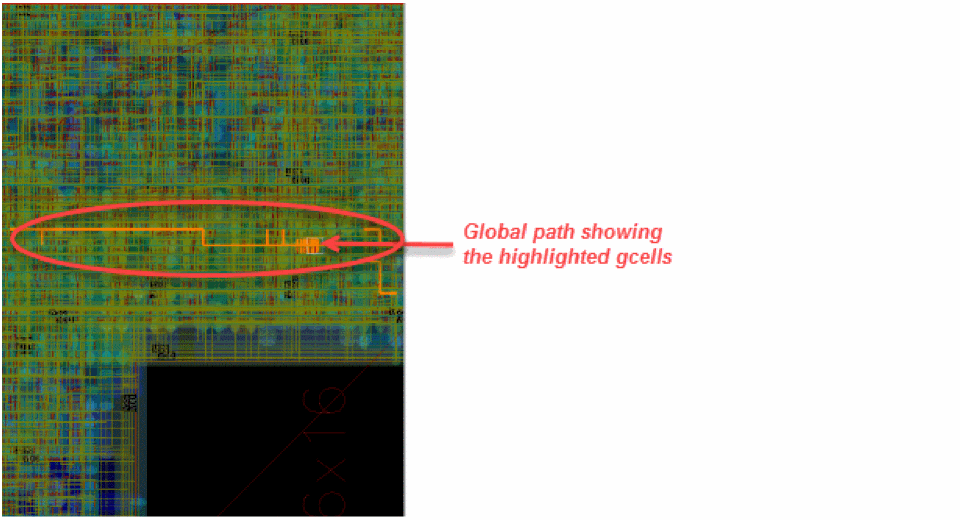
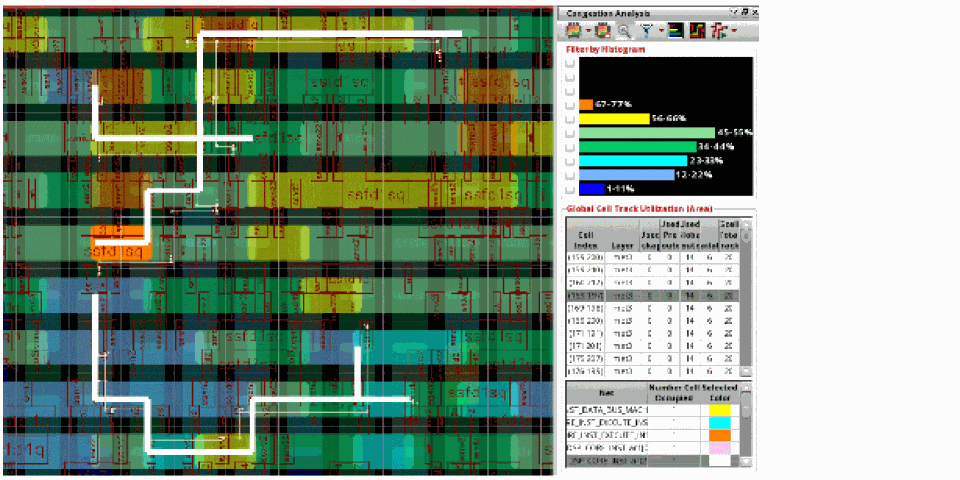
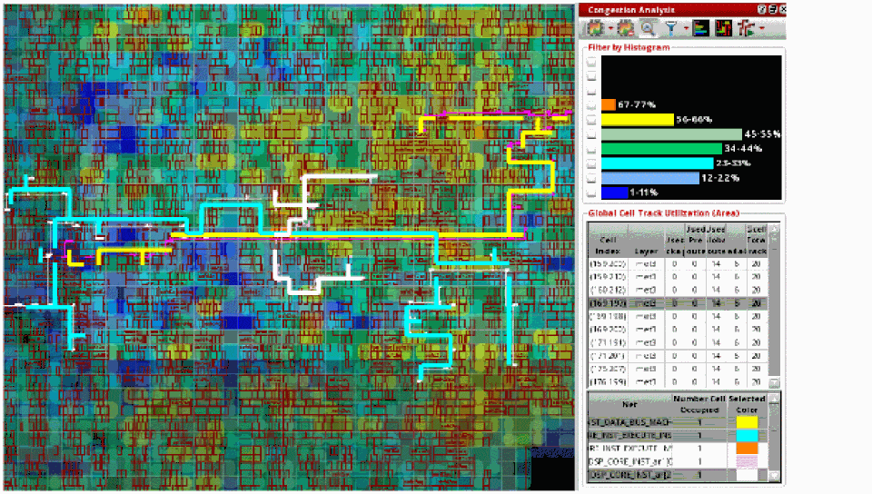
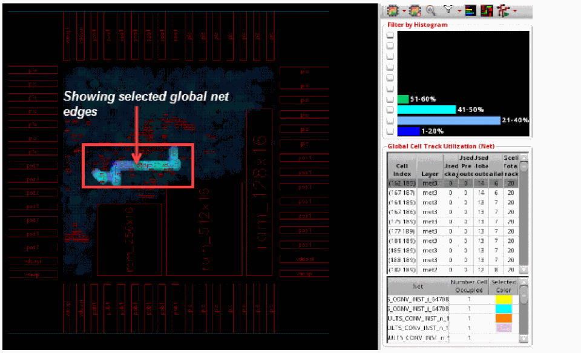

Finding and Displaying Nets
To know where congestion hot spots exist, it is important to identify the nets passing through congested regions of a design so that corrective action can be taken. This section describes how to:
To find and display the nets that are passing through a gcell:
- Run congestion analysis by clicking the Congestion Analysis icon on the toolbar.
- Select a gcell in the Global Cell Track Utilization table.
-
Select a net from the table of nets displayed below the Global Cell Track Utilization table.
All the gcells that the selected net passes through are highlighted. The path displayed by the highlighted gcells is known as the global path. The global path of the selected gcells is seen on the heat map.
 -
To view the path more closely, use the Zoom selected Global Cells icon
on the Congestion Analysis toolbar.
 -
Now, select a range of nets from the Net Selection table by clicking the start and end nets and keeping the
Shiftkey pressed. You can also select multiple nets from the table by clicking multiple nets and keeping theCtrlkey pressed.
When multiple nets are selected, the display of gcells for the selected nets look cluttered. This is because the heat map complicates the global paths of the selected nets.
The selection of nets is usually done from the Navigator assistant and is considered the primary way of displaying nets on the heat map. However, you can also select a net or a group of nets from the Net Selection table in the Congestion Analysis assistant and have the selected nets displayed in the Navigator assistant. -
To only show the congestion on gcells associated with the global paths of the selected nets, click the Show Selected Global Nets Edges option from the Filter drop-down list. The following figure shows how the congestion is displayed before the option is not selected and after the option is selected.

Related Topics
Finding and Displaying Nets in the Navigator
Return to top